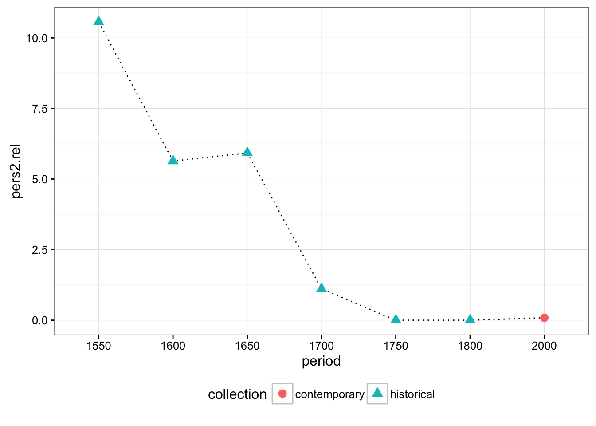
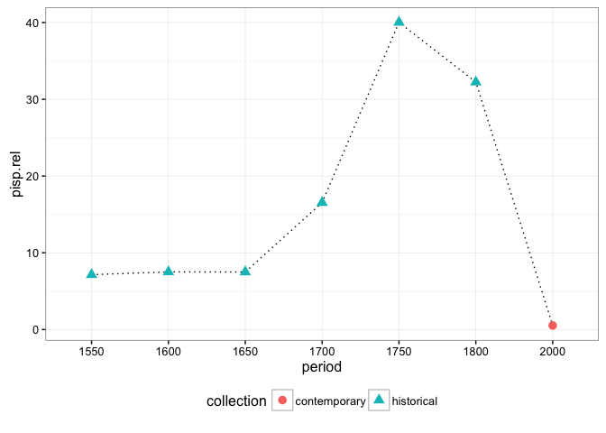
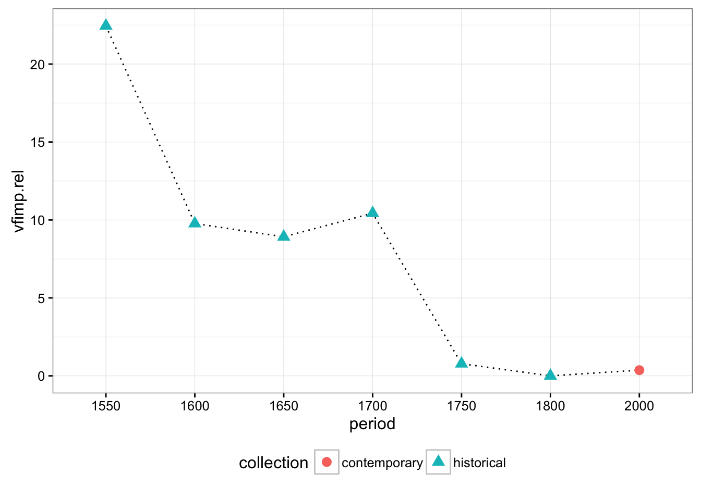
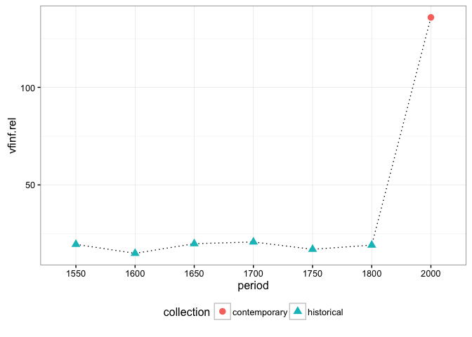

Saarbrücken Cookbook Corpus: a recipe for a diachronic study à la CLARIN-D
Universität des Saarlandes
29 January 2016

This tutorial will show you step-by-step how to use the CLARIN-D infrastructure to compile a diachronic corpus of German cooking recipes. Afterwards, you will learn how to exploit this resource to discover how the conative function has evolved in this register during the last centuries.
In order to reproduce successfully this showcase, you will need to satisfy the following requirements:
- a Mac, Linux, Windows operative system (tested on Mac OS X, Linux Ubuntu)
- libxml2 and libxslt
- 7z
- Python 3, and some packages (
pip3 install -r requirements.txt)- lxml
- pandas
- regex
- requests
- R, and some packages
- reshape2
- dplyr
- ggplot2
- internet connection
You also need the materials. Go to our GitHub repo and clone it.
Ready? Steady! Go!
Corpus compilation
A corpus is a collection of texts in electronic format. We distinguish three main steps in the process of compiling an electronic corpus:
- data acquisition and preprocessing
- linguistic annotation with WebLicht
- corpus encoding for CQPweb
We have two different sources of data:
- contemporary
- historical
The historical recipes were transcribed and digitised manually by Andrea Wurm. We complemented this data set with some transcriptions done by Glonning et al.1. In parallel, we obtained a set of contemporary recipes from a wiki site devoted to cooking recipes kochwiki.org. Luckily, a XML dump of this site is available at the Internet Archive.
Due to the different nature of our historical and contemporary datasets. The corpus compilation methodology although following a similar outline is slightly different.
Data acquisition and preprocessing
Our goal at this stage is to obtain the data in digital form. And afterwards, preprocess the material to obtain a homogeneous minimalist TEI/XML format, that we can easily integrate in our pipeline, namely: WebLicht and CQP.
Contemporary data
Download a wiki dump from https://archive.org/download/wiki-rezeptewikiorg. The file to be downloaded from the archive is 19.8M and gets huge when extracted (1.21G). That’s the reason why we don’t include it. The GitHub repository you downloaded includes a smaller test file, so you don’t have to download the original file for testing, if you don’t want to.
# dowload the dump to the data/contemporary/source folder
wget -P data/contemporary/source https://archive.org/download/wiki-rezeptewikiorg/rezeptewikiorg-20140325-history.xml.7z
# unzip the file
7z x -odata/contemporary/source data/contemporary/source/rezeptewikiorg-20140325-history.xml.7z rezeptewikiorg-20140325-history.xmlTIP: if you are just testing, you can skip this step. You can find an excerpt of this file in the
test/conteporary/source/folder.
The size of the extracted file can give you a slight idea of the daunting task of extracting information manually from this file. Thus, we use a python script instead (wikiextractor.py) to automatically structure the data and extract the following information:
- a minimal TEI/XML file for each recipe containing:
- title, and
- cooking instructions (only the section where the actual cooking procedure is described, no comments, no history of the dish…)
- a CSV file containing metadata for each page such as:
- authors
- ingredients
- tools
- methods
- cuisines
- URL
The input for this script is the huge file rezeptewikiorg-20140325-history.xml. It contains thousands of page nodes, their revisions and the actual texts. See an example page below.
<page>
<title>"Krömpele"-Suppe</title>
<ns>0</ns>
<id>46526</id>
<sha1>rhhwusxi5j205lgcktz71ncz5s12gwu</sha1>
<revision>
<id>262379</id>
<timestamp>2013-10-30T15:27:50Z</timestamp>
<contributor>
<username>CTHOE</username>
<id>927</id>
</contributor>
<comment>Neu angelegt</comment>
<text xml:space="preserve" bytes="1851">{{Rezept|
| Menge = 4 Personen
| Zeit = 30–40 Minuten
| Schwierigkeit = leicht
| Alkohol = nein
| Vegetarisch = nein
| Bild = Kein_Bild.png
|}}
== Zutaten ==
* 175 g [[Zutat:Mehl|Mehl]], gesiebt
* 2–3 [[Zutat:Ei|Eier]]
* 1 Pr. [[Zutat:Salz|Salz]]
* 500 ml [[Zutat:Fleischbrühe|Fleischbrühe]]
* 250 g [[Zutat:Schinkenspeck|Schinkenspeck]]
* frisch geriebener [[Zutat:Muskat|Muskat]]
* 2–3 EL [[Zutat:Schnittlauch|Schnittlauch]]
== Kochgeschirr ==
* 1 [[Zubereitung:Küchenbrett|Küchenbrett]]
* 1 [[Zubereitung:Topf|Topf]]
* 1 [[Zubereitung:Pfanne|Pfanne]]
== Zubereitung ==
* Schnittlauch in kleine Röllchen [[Zubereitung:schneiden|schneiden]]
* Gewürze, Mehl und Eier mit etwas Wasser zu einem dickflüssigen Teig verrühren
* Unter Umständen muss etwas Mehl oder Wasser dazugegeben werden, um die richtige Konsistenz des Teiges zu erreichen
* Den Teig zu großen ''Krömpele'' (Krümel) mit den Händen verreiben
* Etwa 1 l Wasser mit der Brühe [[Zubereitung:aufkochen|aufkochen]]
* Hierin die ''Krömpele'' leicht [[Zubereitung:köcheln|köchelnd]] in etwa 15 Minuten [[Zubereitung:garziehen|garziehen]] lassen
* Zwischenzeitlich den Speck fein [[Zubereitung:würfeln|würfeln]] und goldbraun [[Zubereitung:ausbraten|ausbraten]]
* Speckwürfel in die Suppe schütten, [[Zubereitung:abschmecken|abschmecken]] und mit reichlich Schnittlauchröllchen [[Zubereitung:garnieren|garnieren]] und [[Zubereitung:anrichten|anrichten]]
[[Kategorie:Thüringer Küche]]
[[Kategorie:Nocken]]
[[Kategorie:Vorspeisen]]
[[Kategorie:Suppen]]</text>
</revision>
</page> The script does the following:
- opens the input XML file
- gets all
pagenodes - filters those recipes corresponding to German speaking regions only
- for each of those recipes gets the last revision
- extracts:
- revision ID
- page ID
- year of last revision
- cuisine
- authors
- ingredients
- tools
- methods
- title
- text with the instructions
- title and text are saved as a TEI XML file (
data/contemporary/tei) - metadata are saved in a CSV file (
data/metadata/contemporary-metadata.csv)
To run the script you need to run the following commands from the terminal:
# run the script
python3 wikiextractor.py -i data/contemporary/source/rezeptewikiorg-20140325-history.xml -x data/contemporary/tei -m data/metadataTIP: for development/testing purposes, if you just run
python3 wikiextractor.py, it will work on the testing dataset stored in thetestfolder.
An example for the result TEI files is wiki_188908.xml given below (I would include this as an example in the test directory, also a sample metadata file):
<?xml version='1.0' encoding='UTF-8'?>
<?xml-model href="http://www.tei-c.org/release/xml/tei/custom/schema/relaxng/tei_lite.rng" type="application/xml" schematypens="http://relaxng.org/ns/structure/1.0"?>
<TEI xmlns="http://www.tei-c.org/ns/1.0" xml:lang="de">
<teiHeader>
<fileDesc>
<titleStmt>
<title>Räucherfischmousse im Knusperröllchen auf Gurken-Rahmsalat</title>
<author>Qualia, Jozeil, NikiWiki</author>
<respStmt>
<resp/>
<name/>
</respStmt>
</titleStmt>
<publicationStmt>
<publisher>Universität des Saarlandes</publisher>
<pubPlace>Saarbrücken</pubPlace>
<availability status="free">
<p>Published under a <ref target="http://creativecommons.org/licenses/by-sa/3.0/">Creative Commons Attribution ShareAlike 3.0 License</ref>.</p>
</availability>
<date>2016</date>
</publicationStmt>
<sourceDesc>
<p>http://www.kochwiki.org/w/index.php?oldid=188908</p>
</sourceDesc>
</fileDesc>
</teiHeader>
<text xml:id="wiki-188908">
<body>
<div n="1" type="recipe">
<head>Räucherfischmousse im Knusperröllchen auf Gurken-Rahmsalat</head>
<div n="2" type="contents">
<head>Räucherfischmousse</head>
<p>Das Saiblingsfilet entgräten und in grobe Stücke schneiden. Den Fischfond in einem Topf aufkochen. Die Speisestärke in wenig Wasser glatt rühren, den Fond damit abbinden und auskühlen lassen. Dann die Flüssigkeit mit den Räucherfischstücken in den Mixaufsatz der Küchenmaschine füllen und pürieren "(Falls kein Mixaufsatz oder Küchenmaschine vorhanden einen Zauberstab verwenden)". Die Gelatine in kaltem Wasser einweichen. Einen Topf mit zwei EL Wasser erwärmen und die gut ausgedrückte Gelatine darin auflösen. Während dessen die Schlagsahne halb fest aufschlagen. Die Fischmasse in eine Schüssel füllen und mit der Gelatine sowie etwa der Hälfte des Schlagobers gut vermengen. Dann die restliche Schlagsahne locker unterheben. Das Räucherfischmousse mit Salz sowie Pfeffer abschmecken. Die fertige Fischfüllung mit Klarsichtfolie abdecken und für mindestens 1/2 Stunde im Kühlschrank kalt stellen.</p>
</div>
</div>
</body>
</text>
</TEI>And this is just an example of a few instances of the metadata file:
| source | year | title | authors | categories | ingredients | methods | tools | |
|---|---|---|---|---|---|---|---|---|
| wiki-142256 | wiki | 2010 | Salziger Wähenteig mit saurer Sahne | Vran01, Jozeil | Schweizer Küche | Sahne, Salz, Mehl, Butter | Schüssel, Küchenwaage, Frischhaltefolie | |
| wiki-150044 | wiki | 2010 | Punschglasur | Jozeil | Österreichische Küche | Eiweiß, Zucker, Orangensaft, Rum | Glasieren | Schüssel, Schneebesen |
| wiki-158731 | wiki | 2010 | Riebelesuppe | Vran01, Hombre, Jozeil, Daniel Beyer | Schwäbische Küche | Weizenmehl, Brühwürfel, Ei, Salz, Pfeffer, Meersalz | Abschmecken | Schüssel, Topf, Küchenreibe |
You can check from the command line if the TEI files are alright:
for i in data/contemporary/tei/*.xml; do xmllint --noout --relaxng utils/tei_lite.rng $i; doneTIP: for development/testing purposes, just switch the input folder:
for i in test/contemporary/tei/*.xml; do xmllint --noout --relaxng utils/tei_lite.rng $i; doneHistorical data
We take as starting point the materials in data/historical/source. Our goal is to generate a TEI Lite XML for each recipe, and extract the metadata.
The script xmlextractor.py will help us with the task of normalizing our data.
xmlextractor.py:
- gets all XML files in the input folder
- for each file
- extracts metadata:
- text ID
- year
- authors
- source
- title
- text with the instructions
- clean the text from previous annotation
- adds source and appropriate license to the text
- title and text are saved as a TEI XML file (
data/historical/tei) - metadata are saved in a CSV file (
data/metadata/historical-metadata.csv)
- extracts metadata:
To run the script you need to run the following commands from the terminal:
# run the script
python3 xmlextractor.py -i data/historical/source -x data/historical/tei -m data/metadataTIP: for development/testing purposes, if you just run
python3 xmlextractor.py, it will work on the testing dataset stored in thetestfolder.
You can check from the command line if the TEI files are alright:
for i in data/historical/tei/*.xml; do xmllint --noout --relaxng utils/tei_lite.rng $i; doneTIP: for development/testing purposes, just switch the input folder:
for i in test/historical/tei/*.xml; do xmllint --noout --relaxng utils/tei_lite.rng $i; doneData processing with WebLicht
In the previous section, we have seen how to shape our data. Once that we have a homogeneous format for both collections, we can start to process the texts with WebLicht.
We have to process the two collections (historical and contemporary) separately in WebLicht as we need two slightly different pipelines. In both cases, we have to perform the following steps:
- design a chain in WebLicht
- authenticate
- build a tool chain
- process all recipes with this chain using WaaS (WebLicht as a Service)
- get an API key for WaaS
- use a python wrapper to interact with WebLicht
Logging into WebLicht
We use the Shibboleth Authentication service to log in WebLicht. We will need an identity from a CLARIN identity provider. If your institution is not such a provider you can request an account from the CLARIN provider.
- Visit the WebLicht Wiki, scroll down to the bottom of the page and click on the blue button to
Start WebLicht. - The Shibboleth Authentication service will load. Choose your identity provider (
clarin.eu website accountif you are using a CLARIN account). - You will be redirected to an institutional page where you have to provide your user and password.
- If everything is OK, WebLicht’s welcome page will be loaded.
This video prepared by our colleagues at Tübingen precisely illustrate the logging process:
If you run into problems, read the FAQ explaining how to loggin into WebLicht.
Building the tool chain to process the data
Contemporary tool chain
- Click on
New Chain. - A window will pop-up.
- There are 3 input modes: click on the rightmost button
Browse. - Choose
utils/tcf_example.xml. - Click on OK.
- Choose the tools:
- Berlin: Tokenizer and Sentence
- Berlin: Part-of-Speech Tagger
- Download the chain by clicking on
Download chain - Save the XML file as
chain_contemporary.xmlin the folderutilsof our repository.
For information on how to design a tool chain you can also watch the following video.
Historical tool chain
The process is exactly the same as we used before.
- Click on
New Chain. - A window will pop-up.
- There are 3 input modes: click on the rightmost button
Browse. - Choose
utils/tcf_example.xml. - Click on OK.
- Choose the tools:
- Berlin: Tokenizer and Sentence
- Berlin: CAB historical text
- Download the chain by clicking on
Download chain - Save the XML file as
chain_historical.xmlin the folderscriptsof our repository.
Using WebLicht as a service
We could now process our texts directly through the user-friendly WebLicht GUI. However, if you have thousands of recipes to be annotated, it is more efficient to use WaaS (WebLicht as a Service) to execute our WebLicht chains.
WebLicht as a Service (WaaS) is a REST service that executes WebLicht chains. This allows you to run WebLicht chains from your UNIX shell, scripts, or programs.
It means that we can write a script to automatize our interaction with WebLicht!
We need at least two things:
- a WebLicht chain
- an API key (a kind of “password” to be passed to WaaS)
We already have our WebLicht chains. For the second, go to the WaaS home page, click on the rightmost menu item at the top of the page called API Key. You will be redirected to the already familiar authentication page, choose your institution (clarin.eu website account for us), provide your credentials and a new page will load. If you hit on the button Generate a long string will appear where it reads Your API key. Copy the key in a safe place and treat it like it was a password.
Time to actually process our XML files with WaaS!
Contemporary recipes
We have created a python script to process the recipes with WaaS (weblichtwrapper.py).
The goal of the script is to process all TEI/XML files in a folder with WebLicht and save the results in VRT files for their encoding as a corpus for the Corpus WorkBench (CWB).
The input is typically a folder with the TEI/XML files we created in previous sections. But in fact we could use any XML file.
The script does the following:
- gets a list of all files to be transformed
- finds all nodes containing text to be processed
- sends to WaaS a request to process the text of a node with the provided chain
- converts the WaaS response in TCF format to VRT
- saves the VRT files in the target directory
To run the script you need to invoke the following commands from the terminal
python3 waaswrapper.py -i data/contemporary/tei -c utils/chain_contemporary.xml -o data/contemporary/vrtThen, you will be prompted to provide your API key.
TIP: for development/testing purposes, if you just run
python3 waaswrapper.py -t contemporary, it will work on the testing dataset stored in thetestfolder.
You can get more information on the parameters this script takes by running:
python3 waaswrapper.py -hThe output is a VRT file (one token per line and positional attributes separated by a tabulation).
<?xml version='1.0' encoding='UTF-8'?>
<text id="wiki_244969">
<p>
<s>
Das ART d
Brot NN Brot
in APPR in
ca. ADV ca.
1 CARD 1
cm NN Cm
große ADJA groß
Würfel NN Würfel
schneiden VVFIN schneiden
. $. .
</s>
<s>
Die ART d
Sonnenblumenkerne NN Sonnenblumenkern
in APPR in
einer ART eine
Pfanne NN Pfanne
ohne APPR ohne
Öl NN Öl
anrösten VVINF anrösten
und KON und
fein ADJD fein
reiben VVINF reiben
. $. .
</s>
<s>
Mit APPR mit
Sonnenblumenkernen NN Sonnenblumenkern
, $, ,
Stachelbeeren NN Stachelbeere
sowie KON sowie
Minze NN Minze
garnieren VVINF garnieren
und KON und
heiß ADJD heiß
servieren VVINF servieren
. $. .
</s>
</p>
</text>Historical recipes
The procedure is exactly the same, the only differences are: the location of the input files, and the chain to be used.
python3 waaswrapper.py -i data/historical/tei -c utils/chain_historical.xml -o data/historical/vrtTIP: for development/testing purposes, if you just run
python3 waaswrapper.py -t historical, it will work on the testing dataset stored in thetestfolder.
Corpus encoding for CQPweb
We are going to encode our corpus for the IMS Open Corpus WorkBench (a tool initially developed at IMS Stuttgart). This tool will allow us to query the corpus making the most of the annotation we have obtained with WebLicht.
The CWB expects XML files where two kind of attributes can be added:
- structural (equivalent to XML attributes, and they affect to regions of tokens)
- positional, to add multiple layers of information at token level
In the previous section we created the VRT files with the required positional information. Now, we will complete the annotation by adding structural attributes to the text element from the metadata we stored in a CSV file.
We will have to prepare our data for the CQPweb through a series of very simple steps:
- adding the metadata to the VRT files
- generate a metadata file for the CQPweb
Add the metadata to the VRT files
To add the metadata as structural attributes we need:
- VRT files
- metadata as CSV
- a script (
addmetadata.py)
addmetadata.py:
- obtains of a list of all files to be transformed
- parses the metadata
- finds all nodes where the metadata fields will be added as attributes
- adds to each node its corresponding metadata using the
text IDas key - saves the VRT files in the target directory
The output should look like this:
<?xml version='1.0' encoding='UTF8'?>
<text id="wiki-200141" year="2011" period="2000" authors="NikiWiki|Hombre|Jozeil" decade="2010" title="Bärlauchnockerl" methods="hacken|Abschmecken|anrichten" ingredients="Muskatnuss|Pfeffer|Sauerrahm|Salz|Schmand|Bärlauch|Gelatine" collection="contemporary" cuisines="Oberösterreichische Küche" source="wiki" tools="Küchenreibe|Schlagkessel|Schüssel|Frischhaltefolie|Schneidebrett|Löffel|Messer|Zauberstab|Küchenmaschine">
<p>
<s>
Den ART d
Bärlauch NN Bärlauch
fein ADJD fein
hacken VVINF hacken
. $. .
</s>
</p>
</text>Add metadata to the contemporary recipes
We use addmetadata.py Python script by running the following command:
python3 addmetadata.py -i data/contemporary/vrt -m data/metadata/contemporary-metadata.csv -o data/contemporary/metaTIP: for development/testing purposes, if you just run
python3 addmetadata.py -t contemporary, it will work on the testing dataset stored in the test folder.
Add metadata to the historical recipes
We need to run the command also on the historical recipes indicating the corresponding metadata file, the location of the input files, and the path for the output.
python3 addmetadata.py -i data/historical/vrt -m data/metadata/historical-metadata.csv -o data/historical/metaTIP: for development/testing purposes, if you just run
python3 addmetadata.py -t historical, it will work on the testing dataset stored in the test folder.
Generate the metadata file for CQPweb
CQPweb helps us to calculate distributions across different subcorpora. Typically, this subcorpora are the result of splitting our corpus according to some variables contained in the metadata. To achieve this we only need to pass once a metadata file containing for each text the value of the fields we are interested in.
We have already generated two metadata tables:
- contemporary
- historical
We will merge them and will extract only those fields whose distributions shall be displayed in CQPweb, namely:
- year
- decade
- period
- collection
Moreover, we will add the source and the title of the recipe as a free text field (they won’t be used for the distributions).
To get this file we use the script meta2cqpweb.py.
meta2cqpweb.py:
- gets all input files
- for each file:
- extracts relevant columns
- concatenate info from all files
- saves the output as tab-separated plain text file
We use the following command:
python3 metadata4cqpweb.py -i data/metadata/contemporary-metadata.csv data/metadata/historical-metadata.csv -o data/metadata/sacoco.meta -c year decade period collection source titleTIP: for development/testing purposes, if you just run
python3 metadata4cqpweb.py, it will work on the testing dataset stored in the test folder.
Set up a corpus in CQPweb
We have all materials needed to set up a corpus in CQPweb:
- the texts in VRT format
- a metadata file
You need now to have access to a CQPweb installation as administrator. There are different options to get CQPweb running listed in decreasing order of difficulty:
- install your own CQPweb:
- in your computer, only you have access to the corpus
- in a server, you can share it with other people
- PROS:
- you have maximum control
- you can share with other people if it is installed in a server
- CONS:
- difficult to install, you need expert knowledge to admin a LAMP stack (Apache, MySQL, PHP), check the administrator’s manual
- use CQPwebInABox:
- PROS:
- no installation required, just run a Virtual Machine
- its usage is well documented
- CONS:
- you cannot share your corpus with others
- resource intensive, you will be running a Virtual Machine
- you will have to get familiar with Lubuntu
- PROS:
- use our CQPweb installation:
- PROS:
- you don’t have to cope with this section
- you can share your corpus with others
- CONS:
- you have to give us the corpus and the metadata in the right format (but… wait! You have just learnt how to do it!)
- we work together to clarinify the resource (not too bad either, see the section on clarinifying a corpus).
- PROS:
If you don’t fulfill all this requirements and/or you don’t have experience enough, do not worry. Just jump to the section on clarinifying and leave the gory details for us.
Nevertheless, we document under a separate cover all the steps to get SaCoCo encoded and installed in CQPweb. Check CQPweb setup tutorial.
Integration in the CLARIN-D infrastructure
We have created our resource. Now, we can clarinify it by:
- getting a PID (Persistent IDentifier) for the corpus
- providing the metadata in CMDI format
- depositing the data and the metadata in a repository
- making it harvestable by the VLO
- aggregating it to the FCS
The Universität des Saarlandes as a CLARIN Centre B has the staff and the resources to help you clarinify your data. Check how to deposit data in our repository.
Afterwards, your data will be like SaCoCo:
- deposited in a DSA awarded repository
- findable in the VLO
- searchable through Federated Content Search
- citable thanks to its PID hdl:11858/00-246C-0000-001F-7C6F-1
Corpus exploitation
Our diachronic corpus of cooking recipes in German is now ready to be used. We will proceed as follows:
- We will pose our research question.
- We will design the operationalisation of this research question.
- We will actually extract the features with CQPweb.
- We will visualize and analyse the data with CQPweb/R.
If you want to reproduce every step that we will show you below, you will need to get a user for our CQPweb installation.
Go to this URL to create a new account. Follow the instructions, and you will have access to SaCoCo in a few minutes.
Research question
Has the realisation of the conative function evolved along the time in the cooking recipe register?
Our hypothesis is:
Contemporary cooking recipes show lower linguistic means to address directly to the reader than historical ones.
Wurm already discovered that historical texts showed differences in the way the author addressed the reader.
Operationalisation
In research design, […] operationalization is a process of defining the measurement of a phenomenon that is not directly measurable, though its existence is indicated by other phenomena.
We know that German can use different means to convey the conative function. Among them we can trace pronominal and verbal cues:
- pronominal
- second person personal pronouns (direct)
- indefinite pronouns (indirect)
- verbal
- imperatives (direct)
- infinitives (indirect)
Of course, there are more features that could help us to describe better this phenomenon. Can you think of them? How would you operationalise them? Contributions to extend this tutorial are welcome!!!
The next step is to design how we can retrieve this features in a systematic and effective way making use of the linguistic annotation that we have added with WebLicht.
Basically, we will quantify how many instances of these features can be found per text. First, we need to find the instances, then, we will count them. And, finally, we will describe the results and check if the historical recipes significantly differ from their contemporary counterparts.
Personal pronouns
Second person pronouns are a pronominal indicator of the overt intentions of the writer to engage directly with the reader.
- irreflexives Personalpronomen
- substituirendes Possessivpronomen
- attribuirendes Possessivpronomen
- reflexives Personalpronomen
Indefinite pronouns
Indefinite pronouns like man, jemand, etc. are a pronominal resource that writers can use to avoid addressing directly to the reader, but still use active voice forms.
- substituierendes Indefinitpronomen
Imperatives
The imperative is a verbal device that addresses directly to the reader, it is an order.
- Imperativ
Infinitives
The usage of infinitives is a strategy to convey verbal instructions without using the imperative in a more impersonal fashion.
- Infinitiv
Feature extraction
OK, we know what we are looking for. Let’s see how.
The CWB comes with a query language that enables the interrogation of large text collections using linguistic patterns to retrieve relevant information. We will use it to find the different features that we have discussed above.
Our next mission is to define the queries that will allow us to find in our corpus the phenomena discussed above.
Queries
CQP is a corpus query language which resembles to regular expressions, in the sense that one can define patterns aimed at capturing interesting information. The difference here is that we are not limited to write patterns only relying on word forms. We can combine any linguistic information like lemma and POS to construct more sophisticated patterns.
We will illustrate here only the queries used for personal pronouns. If you want to check all of them see file sacoco.cqp.
Personal pronouns
This macro is aimed at finding personal pronouns, second person. We will look for:
- personal pronouns, second person
- possessive pronouns, second person
- reflexive pronouns
Personal pronouns second person
- personal pronouns second person singular
- personal pronouns second person singular appended to a verbal form
- personal pronouns second person plural
This query aims at finding second person singular personal pronouns. We know that second person singular is a token whose lemma is du, and its PoS tag is PPER, or a token whose surface form can be du, Du, tu, thu, etc.
([lemma="du" & pos="PPER"] | [word="[d|t]h?u" %c])You can check the results at https://fedora.clarin-d.uni-saarland.de/cqpweb/sacoco/concordance.php?qname=f0jfreteeu&uT=y
This one looks for tokens ending in du/tu/thu…
[word=".+[t|d]h?u" %c]It returns 35 matches in 24 different texts https://fedora.clarin-d.uni-saarland.de/cqpweb/sacoco/concordance.php?qname=f0jfsqg6x5&uT=y
And, finally, this one just looks for tokens whose lemma is ihr and their PoS is PPER.
[lemma="ihr" & pos="PPER"]This turns to be a quite rare phenomenon, just 3 hits in the whole corpus https://fedora.clarin-d.uni-saarland.de/cqpweb/sacoco/concordance.php?qname=f0jglv8w52&uT=y.
In order to see the development of the different features, you have to repeat the steps for all features. Below you can see how to explore a combination of the three queries above in CQPweb and how to visualize the results in CQPweb and/or R.
Exploration and visualization
CQPweb
Now, let’s get on with it!
First, you will need access to our CQPweb installation.
Choose the corpus: in our case SaCoCo
Run a query, e.g. combining the queries for personal pronouns second person
([lemma="du" & pos="PPER"] | [word="[d|t]h?u" %c])
|
[word=".+[t|d]h?u" %c]
|
[lemma="ihr" & pos="PPER"]The headline above the concordance gives you information on your query, the number of hits, in how many different texts, etc.
You can now explore the results more closely:
Click on one of the instances to get more context
Click on the text ID at the beginning of each concordance line to get information about the text
Use the powerful post-processing of CQPweb, which is available as a drop-down-menu in the upper right corner:
Choose “Frequency breakdown” and click “Go” to get a frequency list of your query
or Choose “Distribution” and click “Go” to get a distribution of the query results across the subcorpora, in our case, the development over time.
either as “distribution table”
or as “bar chart”
R
So, in the last section we have seen how to use CQPweb to test our queries, improved them, and also save the results.
For reproducibility purposes, and to speed up the process, you can also interact with CQP from the command line.
If you managed to encode the corpus, you can extract all four features (2n person personal pronouns, indefinite pronouns, imperatives, infinitives) with a sacoco.cqp.
# create a directory to save the results
mkdir -p results/
# run the cqp script to get all the extractions
cqp -c < sacoco.cqpIn CQPweb we can see the result of a query at a time. But what if we want to get different representations?
Well, then you can use R for that. Let’s describe very briefly our corpus and the results.
Corpus description
We will read the results/meta.csv which is a table where each row is a text, and the columns are from left to right: text ID, collection, period, decade, year, source.
# import library to format output
library(knitr)
# read metadata
data = read.csv('results/meta.csv', sep = '\t', encoding = 'utf-8', header = F, strip.white = T)
# rename columns
names(data) = c('text_id','collection','period','decade','year','source')
# as factors
data$collection = as.factor(data$collection)
data$period = as.factor(data$period)
data$decade = as.factor(data$decade)
data$year = as.factor(data$year)
data$source = as.factor(data$source)
# print summary
summary(data)## text_id collection period decade
## buchinger_1 : 1 contemporary:2033 1550: 63 2010 :2028
## buchinger_10: 1 historical : 434 1600: 90 1680 : 64
## buchinger_11: 1 1650: 154 1670 : 60
## buchinger_12: 1 1700: 120 1700 : 60
## buchinger_13: 1 1750: 3 1570 : 33
## buchinger_14: 1 1800: 4 1560 : 30
## (Other) :2461 2000:2033 (Other): 192
## year source
## 2013 :859 wiki :2033
## 2014 :776 KochvndKellermeisterey: 33
## 2011 :183 Thieme : 31
## 2012 :168 Buchinger : 30
## 2010 : 42 Colerus : 30
## 1574 : 33 Danckwerth : 30
## (Other):406 (Other) : 280Then we read the table for the number of tokens:
# import library to manipulate tables
library(dplyr)
# we write a function to read CQP output
cqpReader = function(filename, feature, data){
# read file
df = read.csv(filename, sep = '\t', encoding = 'utf-8', header = F, strip.white = T)
# count the number of hits per text
df = group_by(df, V1) %>% summarise(feature = n())
# rename first column
names(df) = c('text_id',feature)
# merge with the original table
data = merge(data,df,'text_id',sort=T, all=T)
}
# read tokens
data = cqpReader('results/tokens.csv', 'tokens', data)
data[is.na(data)] = 0Then, we get an overview of the size of our corpus by collection:
texts_and_tokens_x_collection = group_by(data, collection) %>% summarise(texts = n(), tokens = sum(tokens))
kable(texts_and_tokens_x_collection, align = 'l')| collection | texts | tokens |
|---|---|---|
| contemporary | 2033 | 388956 |
| historical | 434 | 42705 |
By period:
texts_and_tokens_x_period = group_by(data, period) %>% summarise(texts = n(), tokens = sum(tokens))
kable(texts_and_tokens_x_period, align = 'l')| period | texts | tokens |
|---|---|---|
| 1550 | 63 | 6016 |
| 1600 | 90 | 8806 |
| 1650 | 154 | 14708 |
| 1700 | 120 | 12154 |
| 1750 | 3 | 655 |
| 1800 | 4 | 366 |
| 2000 | 2033 | 388956 |
By decade:
texts_and_tokens_x_decade = group_by(data, decade) %>% summarise(texts = n(), tokens = sum(tokens))
kable(texts_and_tokens_x_decade, align = 'l')| decade | texts | tokens |
|---|---|---|
| 1560 | 30 | 3223 |
| 1570 | 33 | 2793 |
| 1600 | 30 | 3703 |
| 1610 | 30 | 3689 |
| 1640 | 30 | 1414 |
| 1670 | 60 | 6579 |
| 1680 | 64 | 4647 |
| 1690 | 30 | 3482 |
| 1700 | 60 | 2925 |
| 1710 | 30 | 6511 |
| 1720 | 30 | 2718 |
| 1780 | 3 | 655 |
| 1800 | 4 | 366 |
| 2000 | 5 | 633 |
| 2010 | 2028 | 388323 |
Results
We read the file for the personal pronouns:
# read personal pronouns
data = cqpReader('results/pers2.csv', 'pers2', data)
# set NA cells to 0
data[is.na(data)] = 0We can know check visually the differences between contemporary and historical recipes grouping the results by period. You probably have seen that samples are not equal in size. For this reason, we also calculated the relative frequency for each group:
# load ggplot2 library to plot graphs
library(ggplot2)
# calculate the relative frequency for pers2
data.rel = group_by(data, period) %>% transform(pers2.rel = (pers2/tokens)*1000 )
# plot lines binding means
ggplot(data=data.rel, aes(x=period, y=pers2.rel, group=period)) +
stat_summary(fun.y=mean, geom="line", linetype = "dotted", aes(group = 1)) +
stat_summary(fun.y=mean, geom="point", size = 3, aes(shape = collection, colour = collection)) +
theme_bw() +
theme(legend.position="bottom")
We repeat the same procedure for indefinite pronouns:
# read indefinite pronouns
data = cqpReader('results/pisp.csv', 'pisp', data)
data[is.na(data)] = 0
data.rel = group_by(data, period) %>% transform(pisp.rel = (pisp/tokens)*1000 )
ggplot(data=data.rel, aes(x=period, y=pisp.rel, group=period)) +
stat_summary(fun.y=mean, geom="line", linetype = "dotted", aes(group = 1)) +
stat_summary(fun.y=mean, geom="point", size = 3, aes(shape = collection, colour = collection)) +
theme_bw() +
theme(legend.position="bottom")
Imperatives:
# read imperatives
data = cqpReader('results/vfimp.csv', 'vfimp', data)
data[is.na(data)] = 0
data.rel = group_by(data, period) %>% transform(vfimp.rel = (vfimp/tokens)*1000 )
ggplot(data=data.rel, aes(x=period, y=vfimp.rel, group=period)) +
stat_summary(fun.y=mean, geom="line", linetype = "dotted", aes(group = 1)) +
stat_summary(fun.y=mean, geom="point", size = 3, aes(shape = collection, colour = collection)) +
theme_bw() +
theme(legend.position="bottom")
And infinitives:
# read infinitives
data = cqpReader('results/vfinf.csv', 'vfinf', data)
data[is.na(data)] = 0
data.rel = group_by(data, period) %>% transform(vfinf.rel = (vfinf/tokens)*1000 )
ggplot(data=data.rel, aes(x=period, y=vfinf.rel, group=period)) +
stat_summary(fun.y=mean, geom="line", linetype = "dotted", aes(group = 1)) +
stat_summary(fun.y=mean, geom="point", size = 3, aes(shape = collection, colour = collection)) +
theme_bw() +
theme(legend.position="bottom")
Let’s put all this together to be able to compare better the evolution of this phenomena: